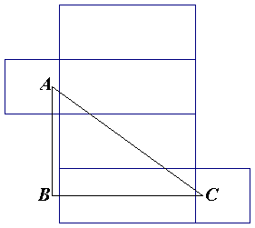

Antwoord op:
Sluipende Spin
Het kortste pad tussen twee punten in een vlak is een rechte lijn.
En omdat de spin alleen via de zijden van de kamer kan bewegen, kunnen we de kamer als volgt "uitvouwen"
om er een vlak van te maken:
|  |
| |
voor |
|
| links |
boven |
| |
achter |
| onder |
rechts |
|
Het kortste pad tussen de spin en de vlieg is de rechte lijn AC.
Omdat AB een lengte van 1.5+3+1.5 = 6 meter heeft en BC een lengte van 0.25+7.5+0.25 = 8 meter,
heeft AC een lengte van 10 meter.
![[TERUG]](left.gif) terug naar de puzzel
terug naar de puzzel
Copyright © 1996-2005. RJE-productions. All rights reserved.